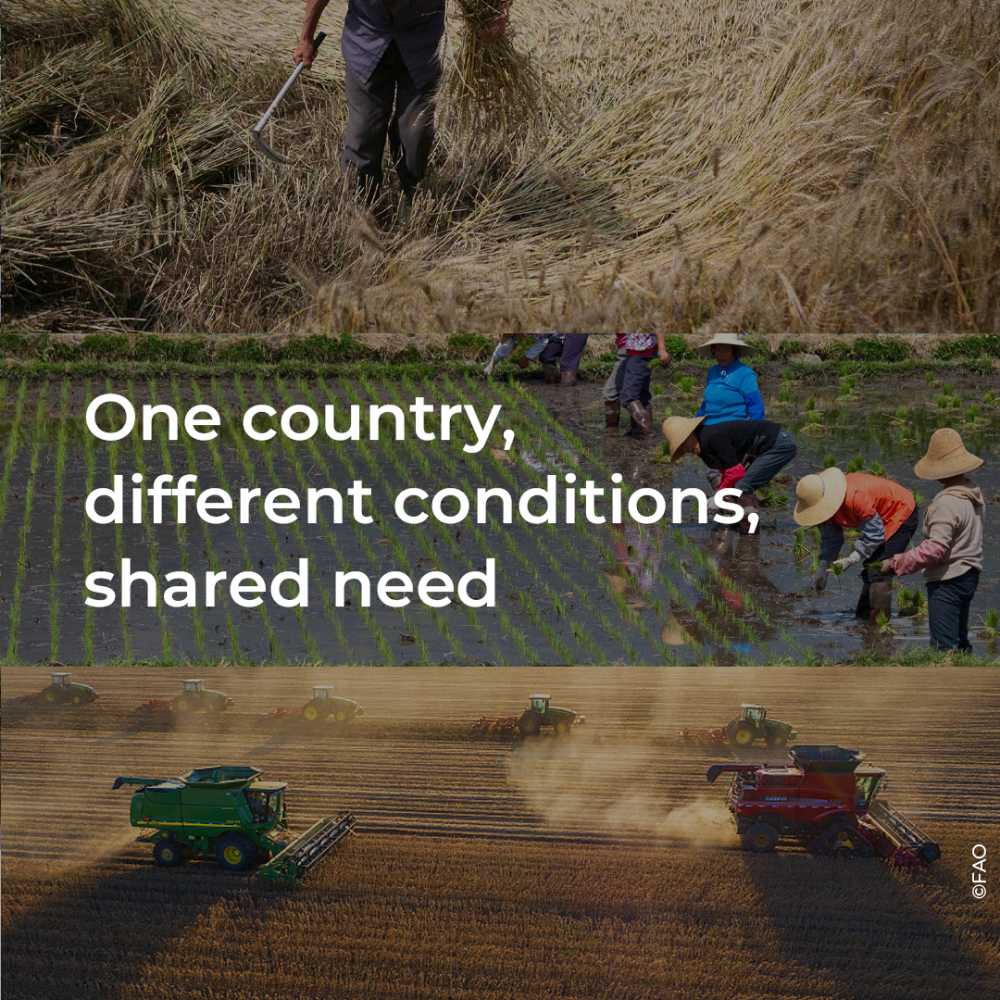

01
Plant genetic resources
Conserving and making available the genetic diversity that forms the basis for crop improvement.
Supporting farmers in China with crop varieties better adapted to changing conditions
Explore the storyFarmers around the world face growing pressures — from climate stress to unpredictable growing conditions. The seeds they plant are the foundation of everything that follows.


Plant genetic resources hold the key to developing varieties that can withstand drought, heat, pests and disease — the pressures that are only growing with climate change.
The NSPGD team leads the efforts to enhance farmers’ access to quality seeds and planting materials of nutritious well-adapted crops and varieties.
Conserving and making available the genetic diversity that forms the basis for crop improvement.
Supporting the development of varieties suited to farmers' conditions, including stresses from climate and environment.
Ensuring that well-adapted varieties are available as quality seed — meeting standards for germination, purity and health.
Working toward timely, affordable access to the right seeds, so improvements in genetics reach the people who need them most.

A short-form video translating the topic into a narrative, public-facing format.
Innovation in plant genetics only delivers results when quality seeds reach farmers. Access — timely, affordable, and reliable — is what turns scientific progress into real-world impact.
China's diverse agroecological conditions, from the humid south to the arid northwest — require locally adapted crop varieties. Farmers in different regions face different challenges: changing rainfall patterns, rising temperatures, new pest pressures.
Access to well-adapted varieties, supported by strong seed systems, can help farmers respond to these shifting conditions. This work connects to a broader global goal: more resilient and sustainable agrifood systems.
